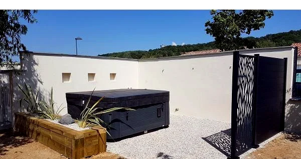
La partie végétale fait vivre le jardin dans le temps. Gazon naturel ou synthétique, massifs, haies et arbres sont choisis selon l'exposition, le sol et l'entretien souhaité, pour un jardin qui reste beau toute l'année.
Parlons de votre terrain et de vos envies. Devis gratuit et sans engagement.
Demander un devis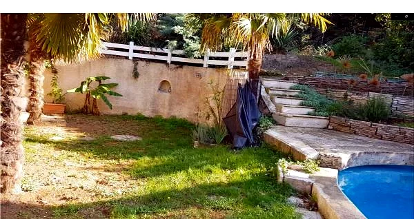
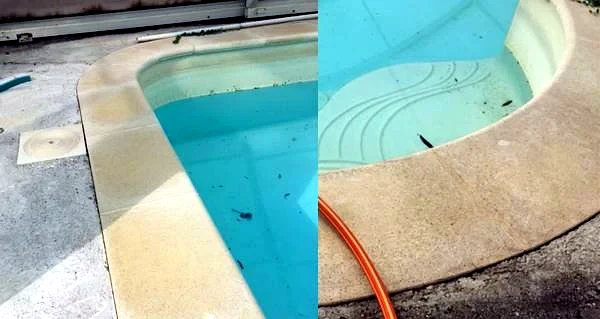
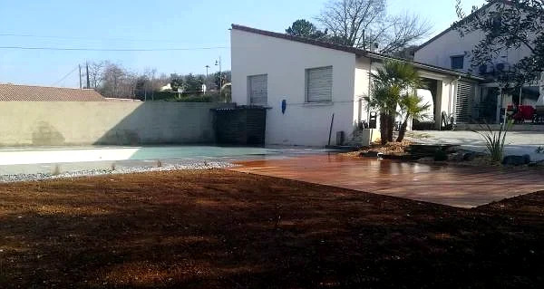
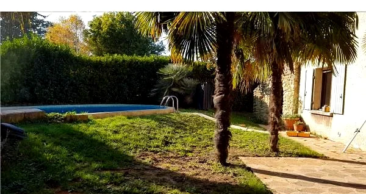
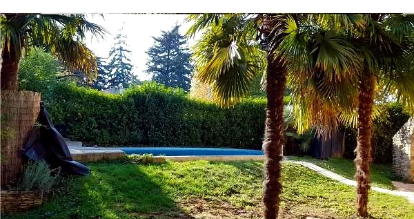
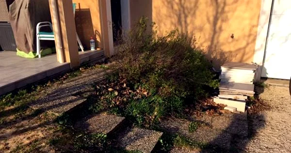
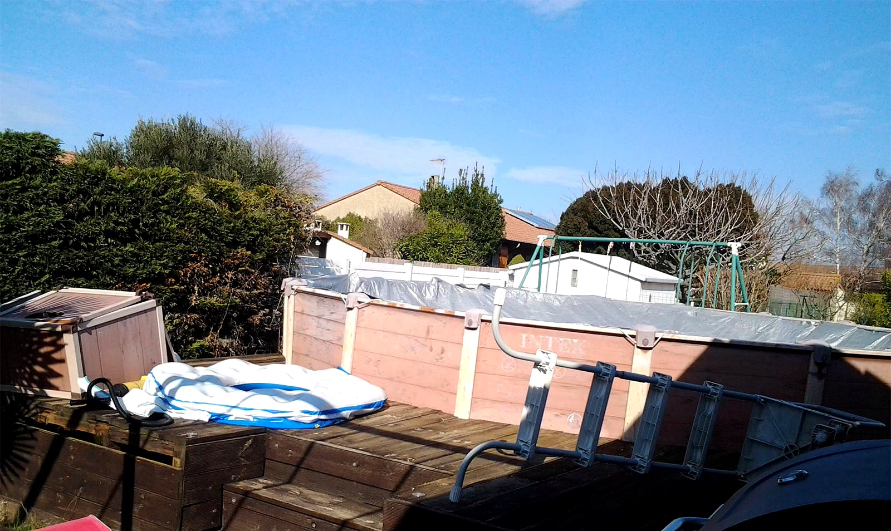
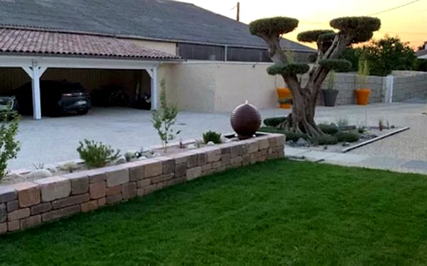
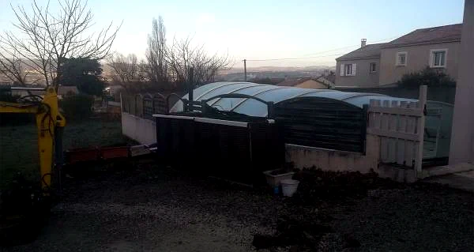
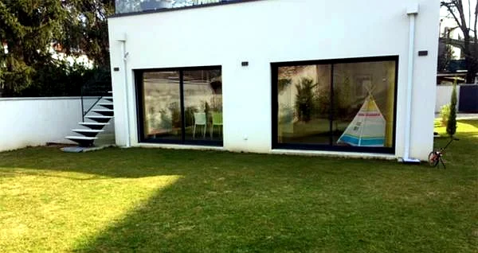
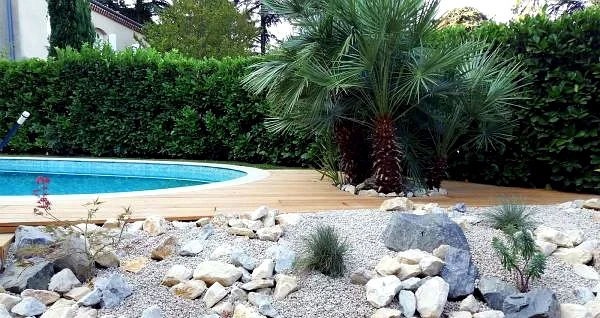
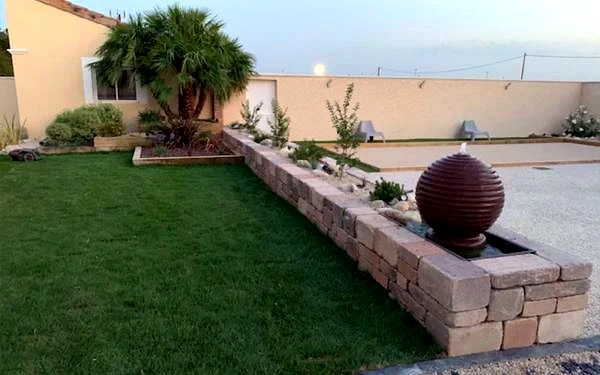
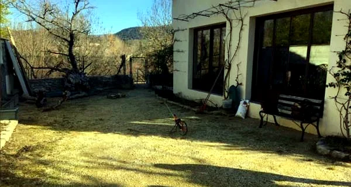
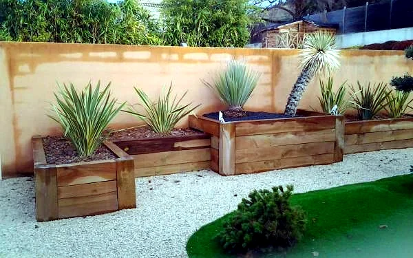
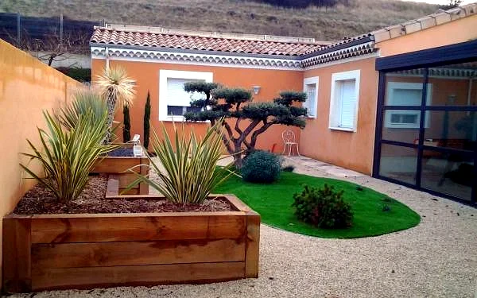